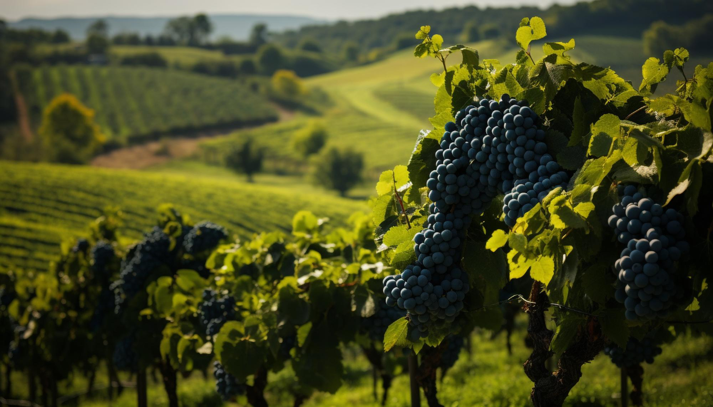
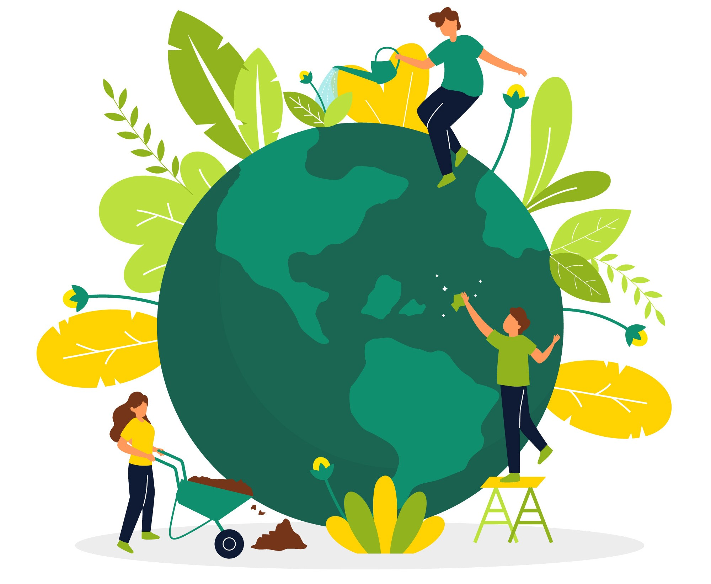
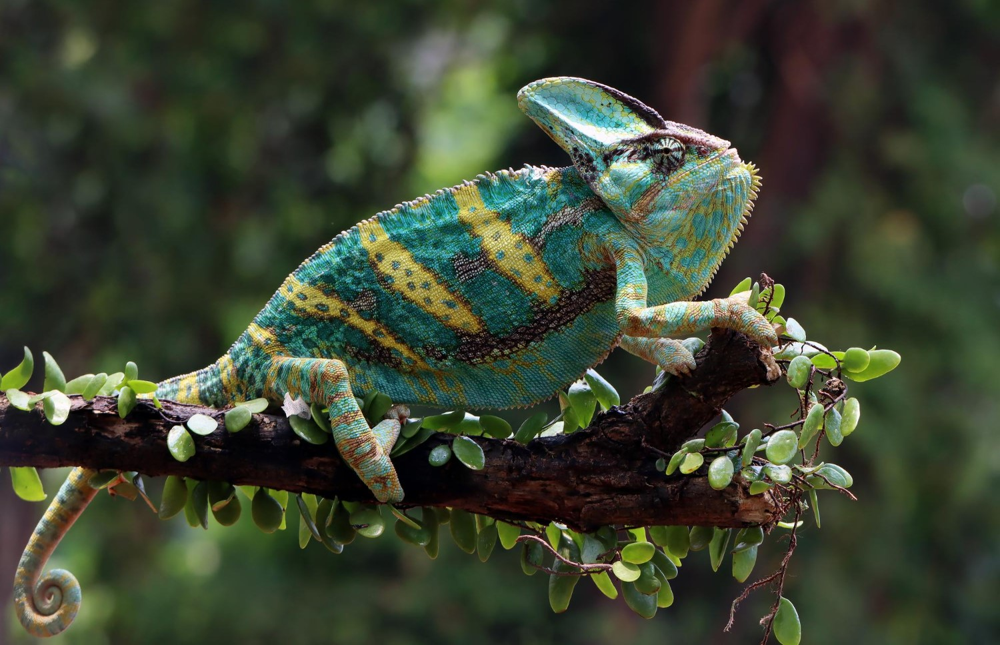

Descubren nueva especie de mariposa en la Amazonía
Un equipo de científicos ha descubierto una nueva especie de mariposa en la selva amazónica. La mariposa, bautizada como "Morpho amazonica", tiene un distintivo patrón de alas azules que la diferencia de otras especies similares. Este hallazgo podría tener importantes implicaciones para la conservación de la biodiversidad en la región.
El turismo rural experimenta un auge en España
El turismo rural está experimentando un auge en España, con un aumento significativo en la demanda de alojamientos en entornos naturales y rurales. La tranquilidad y la belleza de los paisajes naturales españoles están atrayendo a turistas de todo el mundo en busca de experiencias auténticas y relajantes. Desde los impresionantes parques naturales hasta los encantadores pueblos medievales.

Presentan nueva legislación para proteger el medio ambiente
El gobierno ha presentado una nueva legislación para proteger el medio ambiente y abordar los desafíos del cambio climático. La ley incluye medidas para reducir las emisiones de gases de efecto invernadero, promover las energías renovables y proteger la biodiversidad en todo el país.

El futuro de la inteligencia artificial en la medicina
Expertos en inteligencia artificial predicen que la tecnología jugará un papel cada vez más importante en el campo de la medicina en los próximos años. Desde diagnósticos más precisos hasta tratamientos personalizados, la IA tiene el potencial de revolucionar la atención médica y mejorar la salud de millones de personas en todo el mundo.
El mercado de la moda se adapta a la sostenibilidad
La industria de la moda está experimentando un cambio hacia la sostenibilidad y la responsabilidad social. Las marcas están adoptando prácticas más éticas y respetuosas con el medio ambiente en todas las etapas de la producción. Los consumidores están valorando cada vez más la transparencia y el impacto ambiental de la ropa que compran.
Impulso en la investigación espacial
Los esfuerzos de exploración espacial están recibiendo un impulso con nuevos proyectos y misiones planificadas. Se están realizando avances en la exploración de Marte, la Luna y otros cuerpos celestes. Los científicos están ansiosos por descubrir nuevos secretos del universo y expandir nuestro conocimiento del cosmos.
El mercado de la música en línea continúa creciendo
El mercado de la música en línea sigue experimentando un crecimiento significativo, con un aumento en el número de usuarios de servicios de streaming. Los artistas están aprovechando plataformas digitales para llegar a audiencias globales y compartir su música. Este cambio en el consumo de música está transformando la industria y cambiando la forma en que escuchamos y descubrimos nuevas canciones.
Camaleones: Maestros del camuflaje en la naturaleza
Los camaleones son conocidos por su capacidad de cambiar de color y adaptarse a su entorno hasta el punto de casi desaparecer. Estos reptiles son verdaderos maestros del camuflaje, utilizan su habilidad para cazar presas y evitar depredadores. Los científicos están estudiando cómo los camaleones logran este camuflaje perfecto para inspirar nuevas tecnologías en el campo del diseño y la ingeniería.
